[1] "geom_abline" "geom_area" "geom_bar"
[4] "geom_bin_2d" "geom_bin2d" "geom_blank"
[7] "geom_boxplot" "geom_col" "geom_contour"
[10] "geom_contour_filled" "geom_count" "geom_crossbar"
[13] "geom_curve" "geom_density" "geom_density_2d"
[16] "geom_density_2d_filled" "geom_density2d" "geom_density2d_filled"
[19] "geom_dotplot" "geom_errorbar" "geom_errorbarh"
[22] "geom_freqpoly" "geom_function" "geom_hex"
[25] "geom_histogram" "geom_hline" "geom_jitter"
[28] "geom_label" "geom_line" "geom_linerange"
[31] "geom_map" "geom_path" "geom_point"
[34] "geom_pointrange" "geom_polygon" "geom_qq"
[37] "geom_qq_line" "geom_quantile" "geom_raster"
[40] "geom_rect" "geom_ribbon" "geom_rug"
[43] "geom_segment" "geom_sf" "geom_sf_label"
[46] "geom_sf_text" "geom_smooth" "geom_spoke"
[49] "geom_step" "geom_text" "geom_tile"
[52] "geom_violin" "geom_vline" There are many geom layers available to us. Each of the geoms in the list above can be added as layers to a ggplot graphic. Currently this is the complete list:
The general framework remains the same whichever geom we use. In this section we look more closely at some of the everyday geoms that we use and some of the additional options available for tailoring our graphics.
6.1 Histograms and Bar Charts
The standard way of displaying a single continuous variable is via a histogram. To do so we use a geom_histogram layer, remembering to specify either the number of bins, bins or the width of the bins, binwidth. Note that the fill aesthetic controls the colour of the bars. By default the bars have no border and we may wish to add this using the colour aesthetic.
ggplot(data = dm,
aes(x = AGE)) +
geom_histogram(bins = 6, fill = "orange", alpha = .5, colour = "black")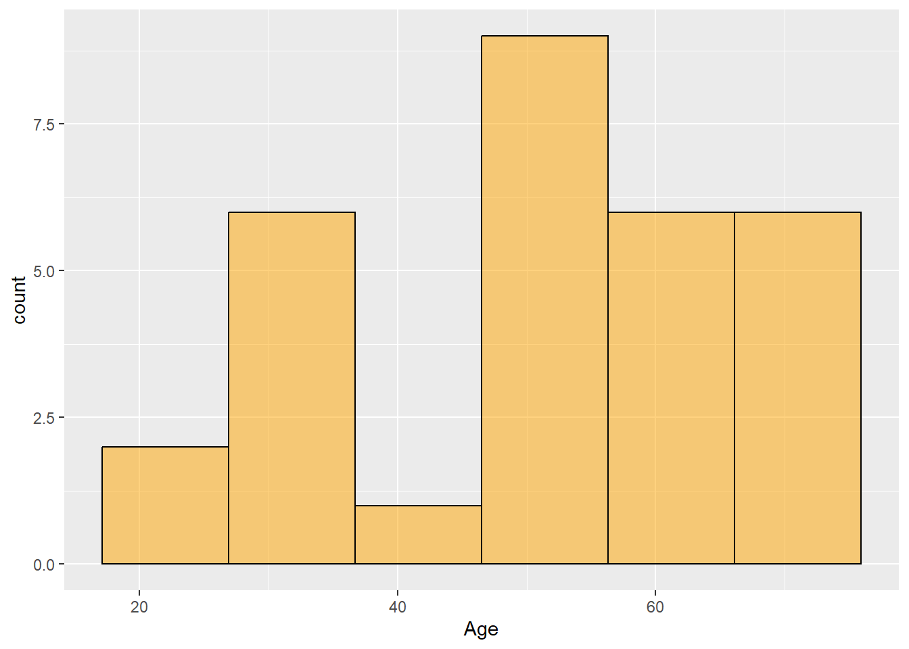
In the ggplot framework we can easily switch the histogram for a density plot, which plots the kernel density estimate. Note that the distribution is only estimated within the range of the data which has the effect of truncating the plot at either end.
ggplot(data = dm,
aes(x = AGE)) +
geom_density(fill = "blue", alpha = .5)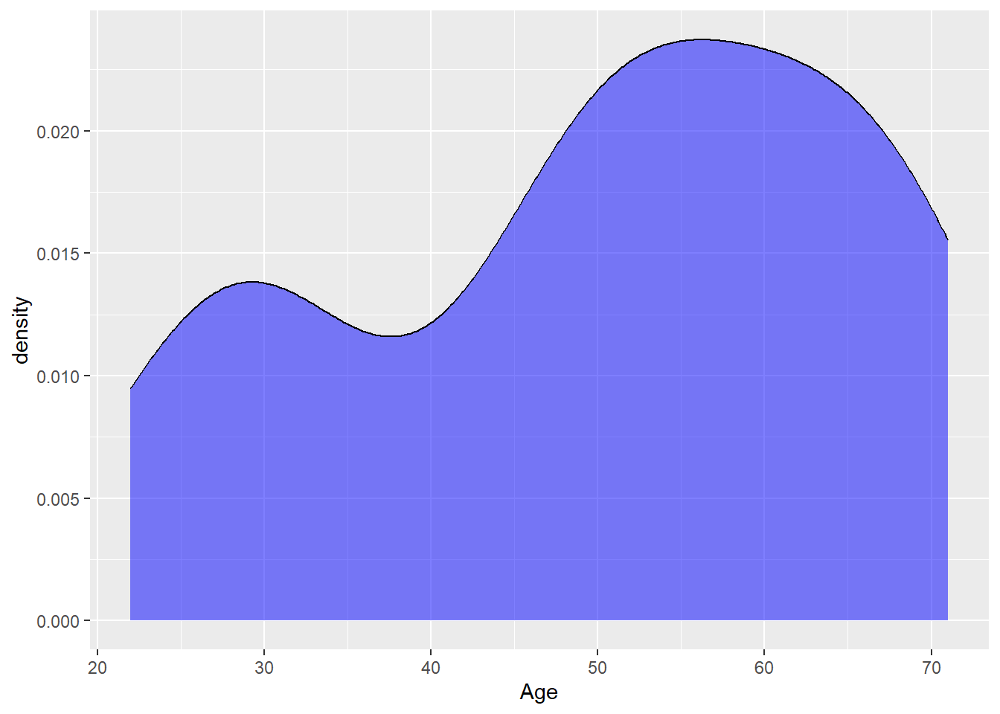
When working with discrete data, for which we wish to display counts of various categories, we can use geom_bar to create a bar plot. By default, geom_bar counts the number of records in each category so if we have pre-summarised data then we need to use the stat = identity option.
# Count subjects "manually"
arm_count <- dm %>%
group_by(ARM) %>%
summarise(`Number of Subjects` = length(USUBJID))
ggplot(data = arm_count,
aes(x = ARM, y = `Number of Subjects`)) +
geom_bar(stat = "identity", fill = "gold")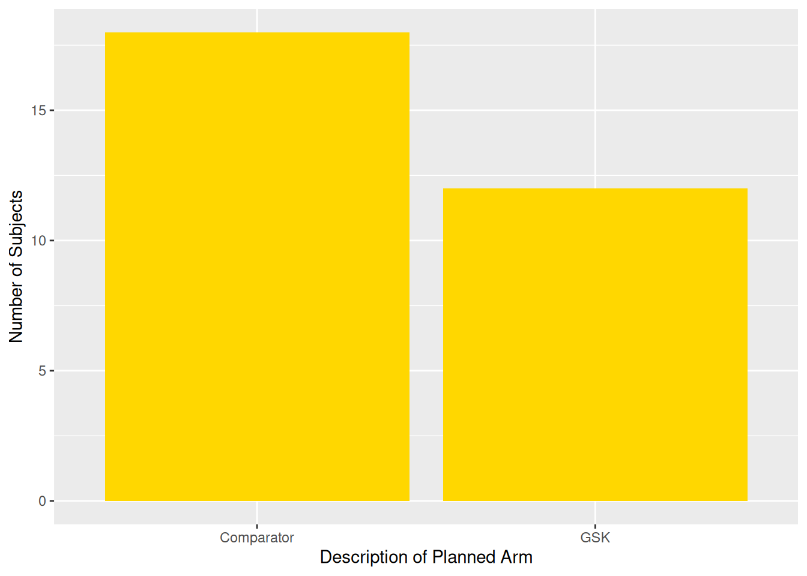
6.1.1 stat_ Functions
We won’t cover the stat functions on this course in any detail but any geom that presents summarised data is underpinned by a stat function. The stat functions simply summarise the data and output a summarised dataset that is suitable for the chosen geom. Setting stat = "identity" allows us to provide our own pre-summarised data, so long as it is in the right form. Writing custom stat functions is not advised for a beginner!
6.1.2 Dodge, Stack and Fill
If we choose to fill by another discrete variable, the default behaviour is to create a stacked bar chart. We can switch to a “dodged” (side-by-side) display using the position argument (position = "dodge"). Another option is to set position = "fill", which creates a proportional representation of the data. Bars may be further manipulated using the width argument for which numbers less than 1 result in thinner bars.
base_plot <- ggplot(data = dm,
aes(x = ARM, fill = SEX))
base_plot + geom_bar(position = "dodge", width = .4)
base_plot + geom_bar(position = "stack", width = .4)
base_plot + geom_bar(position = "fill", width = .4)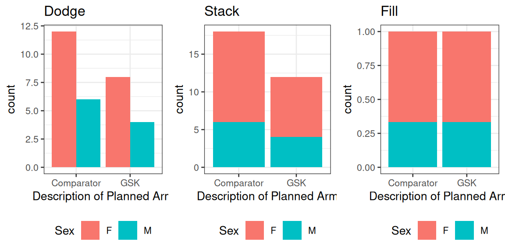
Each of the three positioning options above has a corresponding position_ function that can be supplied instead in order to make use of additional functionality. Below, position_dodge is used in order to add a space between the bars. Confusingly the space between bars is controlled by an argument, width.
base_plot + geom_bar(position = position_dodge(width = .5), width = .4)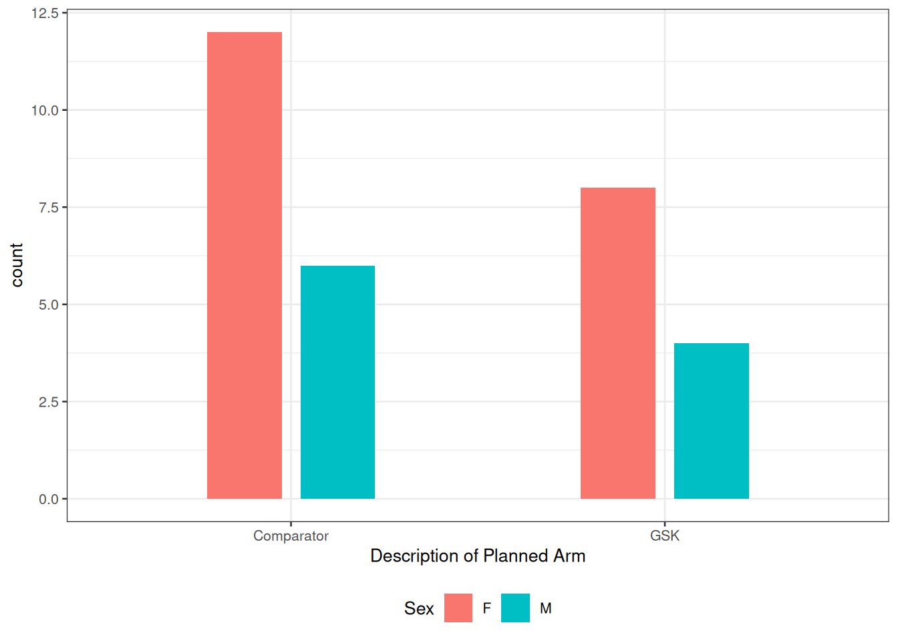
6.2 Boxplots
Creating a simple boxplot is very straightforward. The only consideration is the data type. For example, here is a (not very useful -see explanation after plot) boxplot of ACT Total Score by visit.
# Subset to planned visits
act_full_planned <- act_full %>% filter(20 <= VISITNUM, VISITNUM <= 60)
ggplot(data = act_full_planned,
aes(x = VISITNUM, y = ACTTOT)) +
geom_boxplot()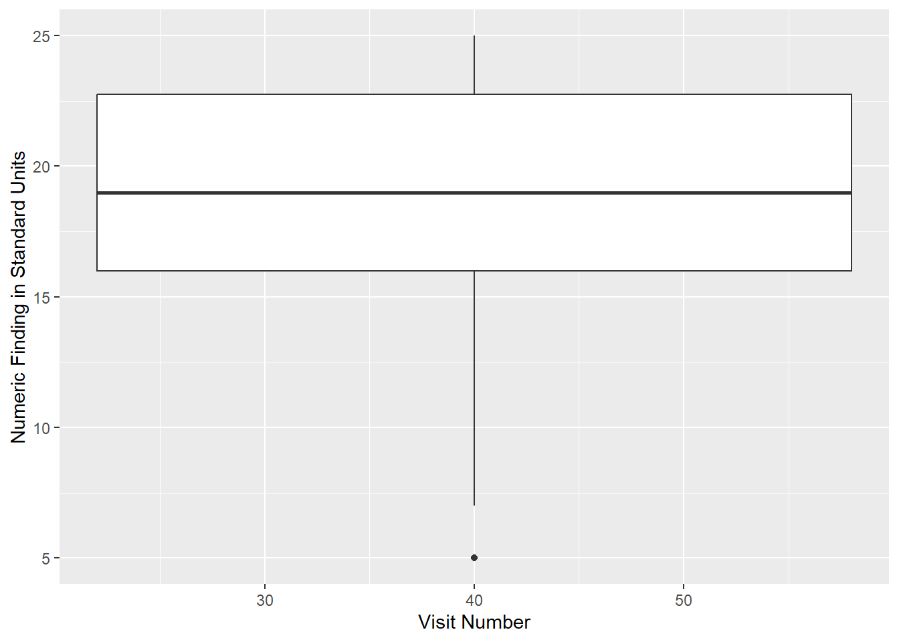
The problem is that that the variable, VISITNUM is continuous. In order to create separate boxplots at each visit we require discrete data. It is best to change this within the code by changing VISITNUM to a character or factor variable. We can also change the data type directly within the call to aes . However, this results in less readable code and undesirable axis labels.
# Create some nicer visit labels
visit_labels <- c("Baseline", paste("Week", seq(6, 24, 6)))
# An on-the-fly fix
ggplot(data = act_full_planned,
aes(x = factor(VISITNUM, labels = visit_labels), y = ACTTOT)) +
geom_boxplot()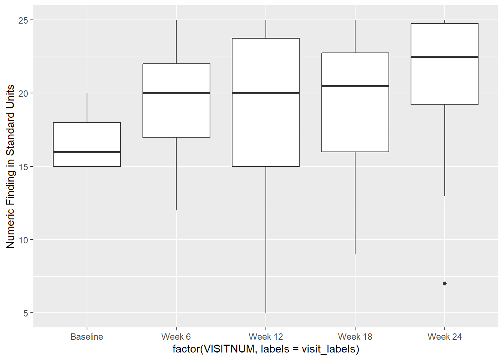
As a boxplot is an area, we usually vary the fill aesthetic if we wish to compare, say, treatments.
# Create some nicer visit labels
visit_labels <- c("Baseline", paste("Week", seq(6, 24, 6)))
# Fill by treatment
ggplot(data = act_full_planned,
aes(x = factor(VISITNUM, labels = visit_labels),
y = ACTTOT, fill = ARM)) +
geom_boxplot()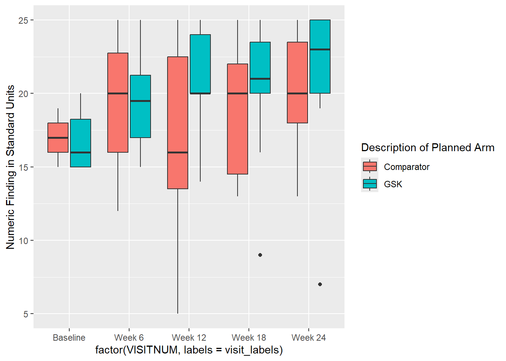
6.2.1 Boxplot Options
Due to the relative complexity of a boxplot the geom_boxplot function has several additional options that allow for greater customisation of the plot. Some of the key features are listed below.
outlier.colour,outlier.shape,outlier.size, etc. to control the appearance of outlierscoef- length of the whiskers as multiple of IQR (default = 1.5)notchandnotchwidth- add indentation
It’s worth noting that the definition of how a boxplot should be drawn varies from software to software. As taken from the help file, “The lower and upper hinges [end of the box] correspond to the first and third quartiles (the 25th and 75th percentiles).” As an alternative we might consider specifying stat = "identity" and generating our summary.
6.2.2 Other Available Geoms for Distributions
As an alternative to the boxplot, geom_violin instead plots the empirical distribution in the boxplot style.
On two-dimensional plots the geom_rug function adds a barcode-like representation of the marginal distributions.
6.3 Paths and Lines
There are two functions for drawing a line graph in ggplot2: geom_path and geom_line. The difference is the order that the points are plotted. The geom_path function follows the order of the data while the geom_line plots points in the order they appear in the x-axis, i.e. from left to right. It is therefore more suited to plotting time-variant data. So long as we account for the order and structures within our data the choice is largely arbitrary.
The difference can be seen in the following plots.
random_data <- tibble(x = c(4,6,2,4,2,4,1),
y = c(7,2,1,6,3,8,5))
base_plot <- ggplot(data = random_data,
aes(x = x, y = y))
# Path
base_plot + geom_path() +
ggtitle("Path Plot of \"Random\" Data")
# Line
base_plot + geom_line() +
ggtitle("Line Plot of \"Random\" Data")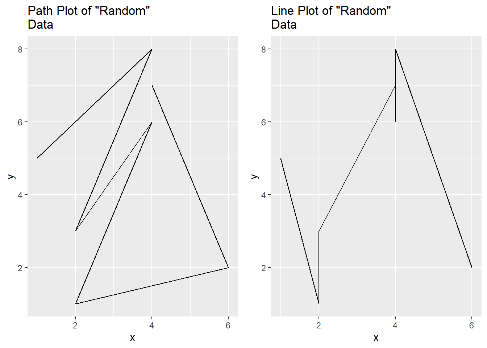
6.4 Kaplan Meier Plots
There is currently no in-built functionality that enables us to quickly draw Kaplan-Meier curves. However the underlying data is easy to generate using the survival and broom packages. In the example below we use the survfit function to generate the KM estimates from the in-built lung data. We extract the required coordinates using tidy and then use the geom_step function to plot the necessary stepped curve. Deaths are added to the plot via an additional geom_point layer. We will look more closely at working with multiple geom layers following the exercises.
# Import the lung data from the survival package
library(survival)
library(broom)
head(lung) inst time status age sex ph.ecog ph.karno pat.karno meal.cal wt.loss
1 3 306 2 74 1 1 90 100 1175 NA
2 3 455 2 68 1 0 90 90 1225 15
3 3 1010 1 56 1 0 90 90 NA 15
4 5 210 2 57 1 1 90 60 1150 11
5 1 883 2 60 1 0 100 90 NA 0
6 12 1022 1 74 1 1 50 80 513 0# Create a KM fit
cox_mod <- survfit(Surv(time, status) ~ ph.ecog , data=lung)
km_lung <- tidy(cox_mod)
# Plot the data
ggplot(data = km_lung,
aes(x = time, y = estimate, colour = strata)) +
geom_step() +
# Censoring - more on multiple layers coming up
geom_point(aes(shape = factor(n.censor)), size = 4) +
# Mark deaths with a + but don't add to the legend
scale_shape_manual(values = c("", "+"), guide = 'none')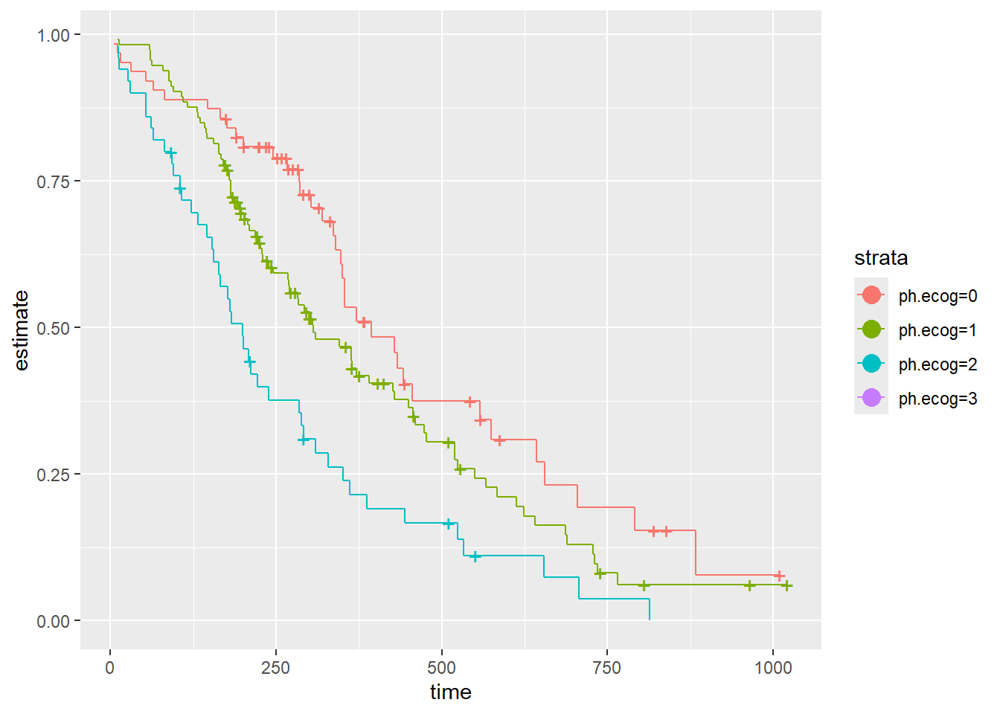
6.5 EXERCISE
- Create a density plot of age using the demography data
- Shade the area by treatment
- Adjust the transparency so that the full curves can be seen for both treatments
- Create a boxplot of Change from baseline in ACT Total Score at Week 24 by Sex
- Colour (fill) by treatment
- Change the shape used for outliers to an empty circle
- Create a violin plot of Change from baseline in ACT Total Score at Week 24 by Sex
- Create a bar plot of the number of observations for each treatment group, at each visit in the ACT data (excluding early withdrawals).
Extra
- Narrow the boxplots from question (2) and separate so that none of the boxplots touch each other
6.6 Combining Geoms
Before we look at any more graph types, let’s look briefly at how the geoms that we are creating may be used together. The layered approach allows us to combine geoms by adding them as separate layers. For example we might wish to add symbols as discrete time points when plotting a line graph.
ggplot(data = pk,
aes(x = TIME, y = CONC, group = SUBJID)) +
geom_line() +
geom_point(colour = "red")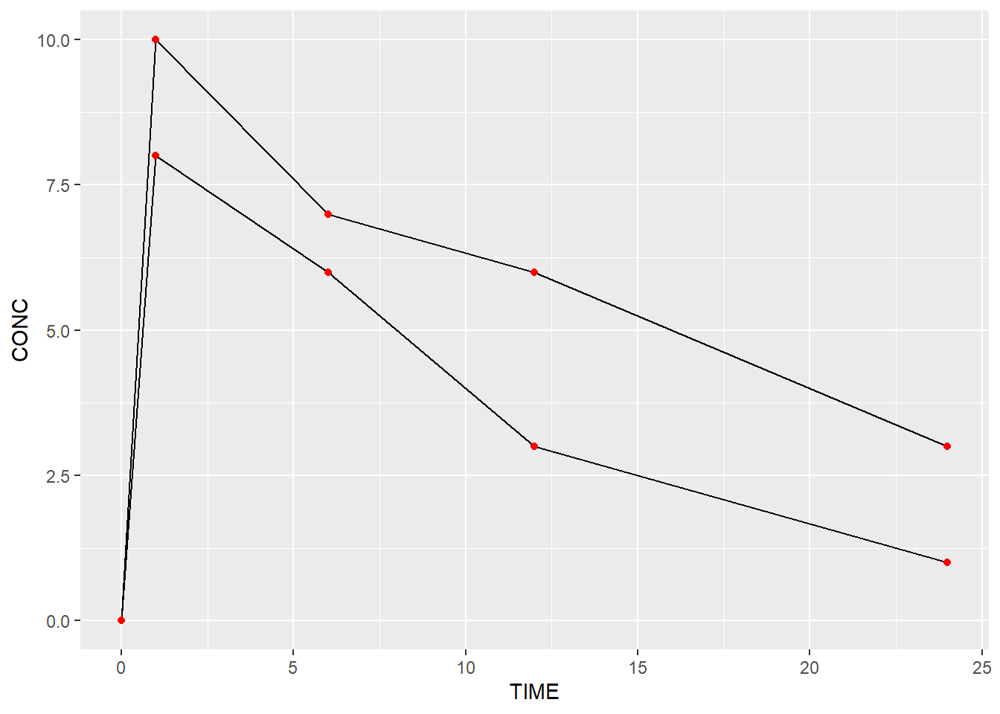
6.6.1 Mapping Data Within Geom Layers
Until now we have always called the aes function from within the ggplot function. However it is also possible to define our mappings within the geom layers themselves. Consider the previous example.
ggplot(data = pk,
aes(x = TIME, y = CONC, group = SUBJID)) +
geom_line() +
geom_point(colour = "red")Here we specified a group option that is not required for geom_point. Thankfully the unnecessary information was ignored. However, to be more specific we could have defined the grouping within the geom_line layer.
ggplot(data = pk,
aes(x = TIME, y = CONC)) +
geom_line(aes(group = SUBJID)) +
geom_point(colour = "red")It could be argued that this is technically more robust code, although it actually involved some additional typing since we had to call the aes function again within the geom_line layer.
In most cases, where we define our mappings makes no difference and there are no general conventions on where it should be defined. However, it is worth noting that if we define a mapping in the ggplot layer it is inherited by subsequent layers. Whereas if we define a mapping within a geom layer it applies only to that layer.
6.6.2 Working with Multiple Datasets
In addition to the mappings, we may also move the data argument to the geom layers. This enables us to use multiple datasets within the same graph. A common example of this is adding summary information to a plot. Here is a very simple example using our two-subject PK data.
# Find the average at each time of our two pk subjects
pk_ave <- pk %>%
group_by(TIME) %>%
summarise(CONC = median(CONC))
# Plot the original data and the average
ggplot() +
geom_point(data = pk,
aes(x = TIME, y = CONC)) +
geom_line(data = pk_ave,
aes(x = TIME, y = CONC), colour = "red") 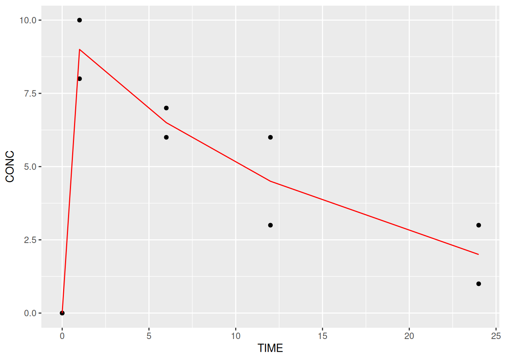
6.7 Error Bars and Ribbons
6.7.1 Error Bars
Typically, we draw error bars at specific time points along an x axis. At each time point we require a lower and upper bound (in ggplot, error bars have no midpoint, that is achieved using other geoms). Rather than mapping a single variable to a y aesthetic we map each of our two variables to a ymin and a ymax aesthetic respectively.
In the following example we will plot some standard errors for the change from baseline in ACT Total Scores at each (post-baseline) time point.
# Summarise the ACT data
act_post_bl_summary <- act_full %>%
# Post BL data
filter(30 <= VISITNUM, VISITNUM <= 60) %>%
# Mean and standard errors for each visit
group_by(VISITNUM) %>%
summarise(Mean = mean(ACTCHGBL),
N = length(USUBJID),
SE = sd(ACTCHGBL) / sqrt(N),
LowerSE = Mean - SE,
UpperSE = Mean + SE)
# Now the plotting bit
errorbar_eg <- ggplot(data = act_post_bl_summary,
aes(x = VISITNUM, ymin = LowerSE, ymax = UpperSE)) +
geom_errorbar(width = 0.8) # NOTE the 'width' argument
errorbar_eg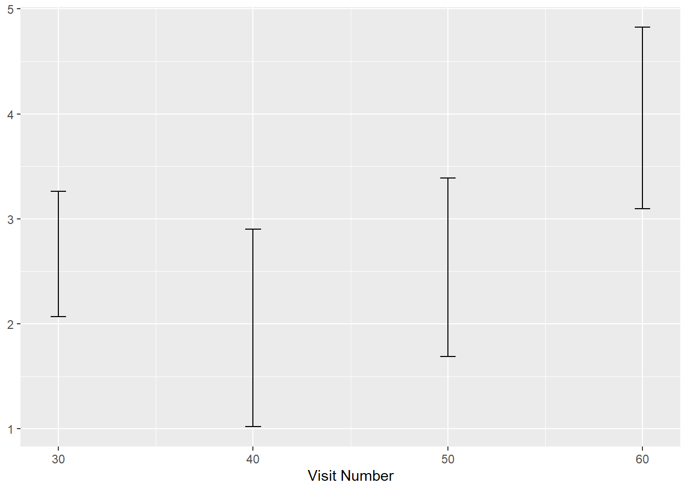
Note the use of the width argument. By default the caps on the bars can be quite wide and we will almost always wish to decrease the width from the default value.
6.7.2 Combining Error Bars with Other “geoms”
The geom_errorbar function is very flexible and can be combined with either continuous or discrete data. Here’s the previous example again with a line joining up the mean values.
# Add lines to our previous example
errorbar_eg +
geom_line(aes(y = Mean)) +
geom_point(aes(y = Mean), colour = "orange", size = 2) +
scale_y_continuous("Mean (+/- SE)")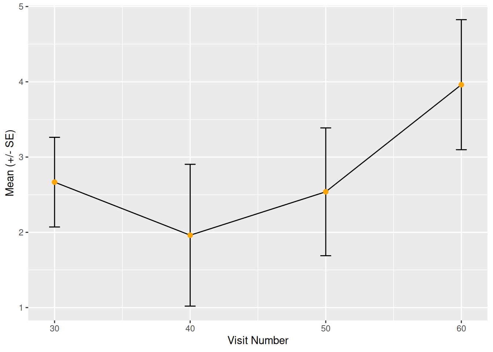
And here’s an alternative of adding error bars to a bar chart.
# Add a bar chart underneath the error bars
# Note: this puts bars on top of the error bars
# in practice swap the order
errorbar_eg +
geom_bar(stat = "identity", aes(y = Mean), alpha = .5, fill = "maroon") +
scale_y_continuous("Mean (+/- SE)")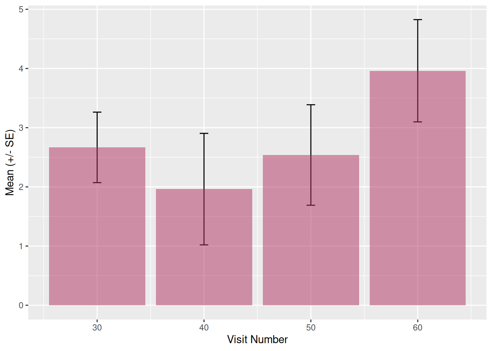
6.7.3 Ribbons
Where the x-axis is time (and the time points are equally spaced) it can make sometimes be preferable to draw a “ribbon” instead of bars. To achieve this we simply swap geom_errorbar for geom_ribbon.
ribbon_plot <- ggplot(data = act_post_bl_summary,
aes(x = VISITNUM, ymin = LowerSE, ymax = UpperSE)) +
geom_ribbon(fill = "lightblue", alpha = .2) +
geom_line(aes(y = Mean)) +
geom_point(aes(y = Mean), colour = "orange", size = 2) +
scale_y_continuous("Mean (+/- SE)")
ribbon_plot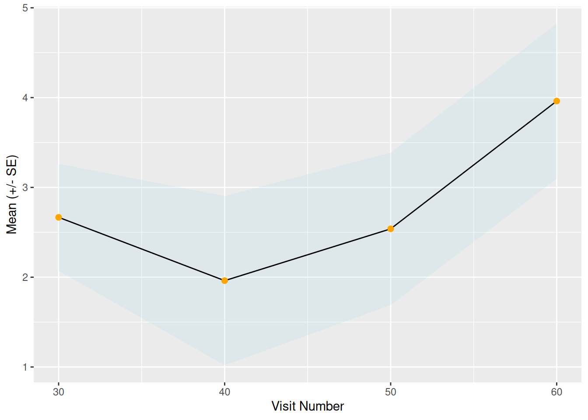
6.7.4 Other Geoms for Ranges
Other geoms for drawing ranges include:
geom_linerangefor drawing a vertical interval line at a single x valuegeom_pointrangefor drawing a vertical interval line at a single x value with a point in the middlegeom_errorbarhfor plotting horizontal error bars as we might see in a forest plot.geom_crossbar- creates output much like the box section of a boxplot, thereby allowing us to define our own boxplots.
6.8 Reference Lines and Smoothers
The ggplot package contains several geoms for adding reference lines. To start with let’s look at the simplest form of reference line, a vertical (or horizontal) line.
- For vertical lines we use
geom_vline(xintercept = ... ) - For horizontal lines we use
geom_hline(yintercept = ... )
Here, we add a horizontal reference line for a clinically meaningful change from baseline in the ACT Total Score.
# Add a red, dotted reference line to the ribbon plot
ribbon_plot +
geom_hline(yintercept = 3, linetype = 3, colour = "red", linewidth = 1.5)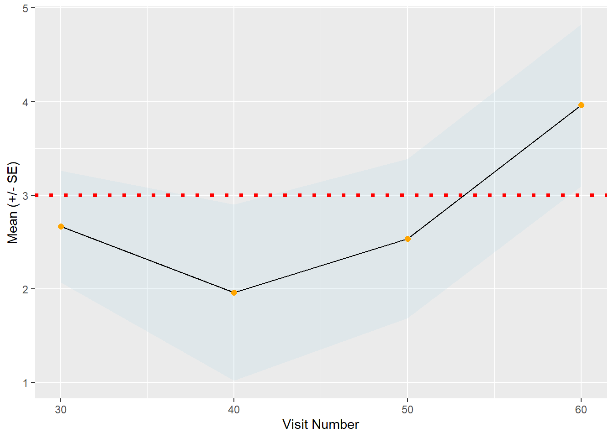
We can also add diagonal reference lines using geom_abline. This function requires an intercept and a slope.
# Create a scatter plot of weight against height.
scat <- ggplot(data = vs,
aes(x = HEIGHT, y = WEIGHT)) +
geom_point()
# Use a linear model to get a best-fit line
a_model <- lm(data = vs, WEIGHT ~ HEIGHT)
int <- coef(a_model)["(Intercept)"]
slope <- coef(a_model)["HEIGHT"]
# Add a reference line
scat +
geom_abline(intercept=int, slope = slope, colour = "darkgreen",
size = 1.5)Warning: Using `size` aesthetic for lines was deprecated in ggplot2 3.4.0.
ℹ Please use `linewidth` instead.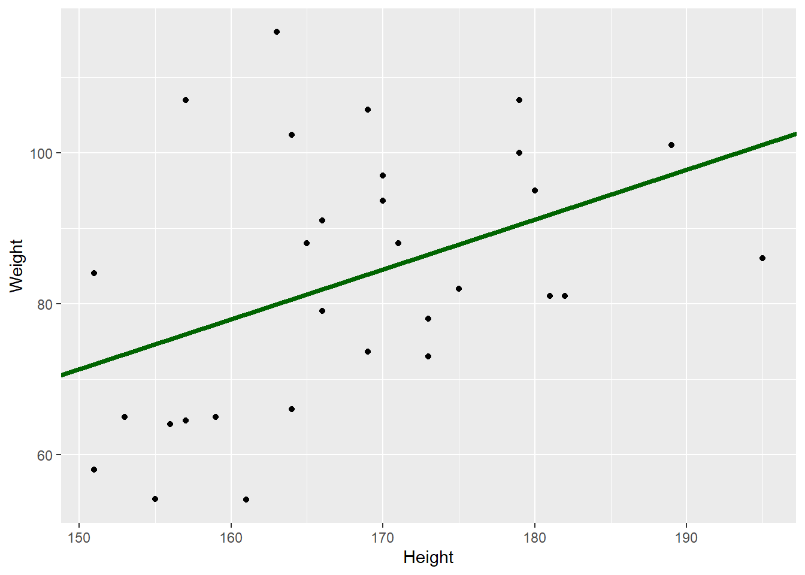
6.8.1 Smooth Lines
It is also fairly straightforward to fit different smoothers using geom_smooth. For less than 1,000 observations the default is to fit a loess smoother. Other options are available via the method argument. These include lm for linear model and gam for a generalised additive model (the default for >1,000 observations).
# Create a scatter plot of weight against height.
ggplot(data = vs,
aes(x = HEIGHT, y = WEIGHT)) +
geom_point() +
geom_smooth(colour = "hotpink3", size = 1.5)`geom_smooth()` using method = 'loess' and formula = 'y ~ x'
6.9 Text
The geom_text function requires x and y coordinates and a label argument (i.e. the text that we wish to add). The coordinates and label can be entered manually or we could use a dataset.
6.9.1 Manual Annotation
Here is an example that uses text to add to our earlier ribbon plot.
ribbon_plot +
geom_hline(yintercept = 3, linetype = 3, colour = "red") +
geom_text(x = 60, y = 3, colour = "red",
label = "Clinically\nmeaningful\ndifference",
hjust = 1, vjust = 1)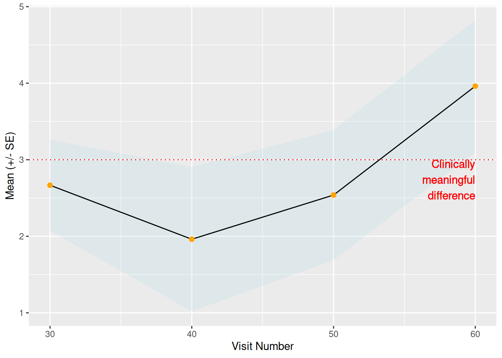
In addition to the three base arguments we changed the colour and used the hjust and vjust arguments to adjust the horizontal and vertical alignment of the text relative to the coordinates we provide. Both arguments take values in the 0:1 range. In the plot above we set both parameters to be equal to one, meaning that the text is right- and top-aligned.
We can also control the rotation of the text using the angle argument. And we can even control the line spacing via the lineheight argument.
6.9.2 Automated Text Labelling
Using a data frame it is very easy to add automated text labels to our plot. Arguments nudge_x and nudge_y provide further assistance when labelling points.
ggplot(data = pk,
aes(x = TIME, y = CONC, group = SUBJID)) +
geom_line(alpha = .4) +
geom_point() +
geom_text(aes(label = SUBJID), nudge_x = .5, nudge_y = .5)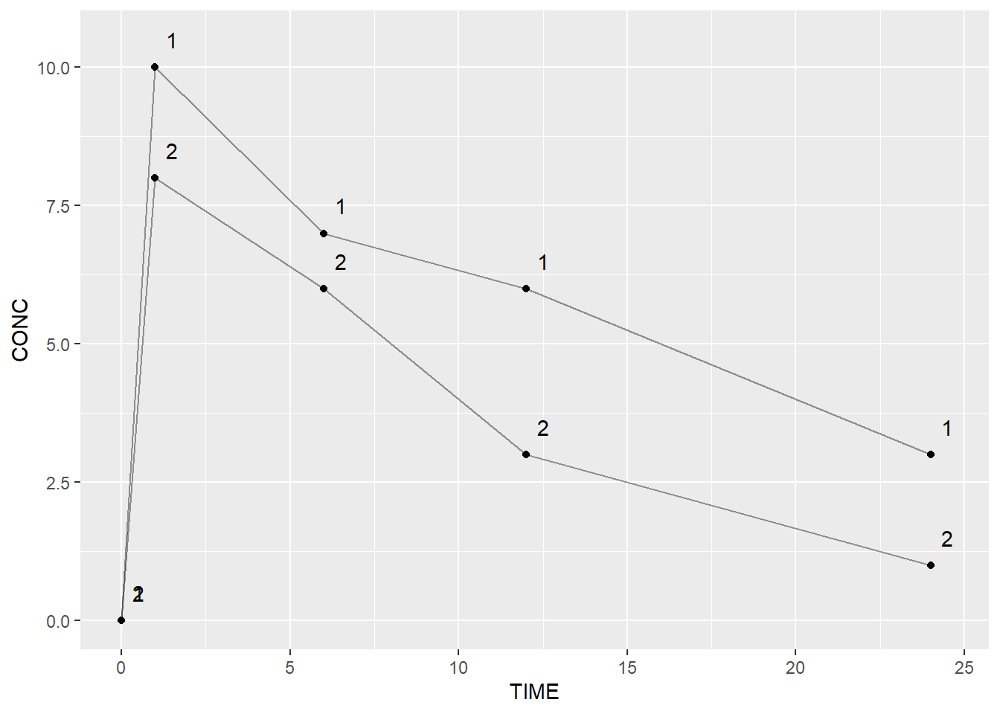
6.10 EXERCISE
- Re-create the Change from Baseline in ACT Total Score over time error bar example but separate out the two treatment groups. HINT: Use the code in the accompanying course R script to save time
- Offset the treatment groups so that the intervals don’t overlap. HINT: Use
position_dodge() - Add points and lines through the means and ensure that they line up with the intervals
- Offset the treatment groups so that the intervals don’t overlap. HINT: Use
Extra
- Create a boxplot of Change from baseline in ACT Total Score at Week 24 by Sex and label the outlier(s) with their subject number
- Fit a linear model of the change from baseline in Act Total Score with explanatory variables of treatment, age, gender, visit. Now create a QQ plot of the quantiles from the model. HINT: use geom_qq.